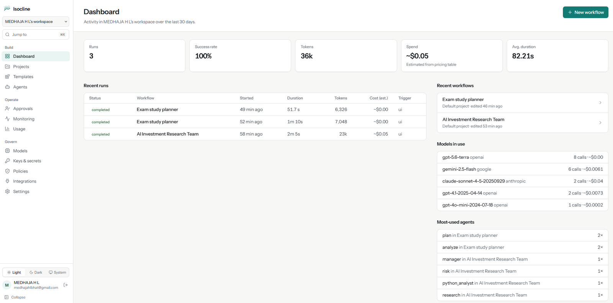

A durable runtime for agent workflows, with a visual builder on top.
Isocline is an open-source, self-hosted control plane for agent workflows. You compose a workflow on a canvas, run it with any model, and the runtime keeps it correct through crashes, restarts, slow human approvals and failed side effects.

The dashboard of a local installation: recent runs with duration, tokens and estimated cost per run, and the models used across providers.
Problem and users
Building an agent is becoming easy. Operating agent workflows reliably is not. Agent workflows run for seconds to days. Model calls are slow and fail or rate-limit. Workers crash mid-run and deploys restart everything. A person may approve a step tomorrow, an external system may call back next week, and a side effect may need undoing when a later step fails. Generated code also has to run somewhere it can’t reach credentials or the network.
Most visual agent builders treat every edge as “some text”, so mismatched data only surfaces deep inside a paid model call.
Intended users
- Developers and teams who want to build agent workflows visually or through an API, run them on their own infrastructure, and keep a full trace of every run.
- Operators self-hosting on commodity components (PostgreSQL, Redis, Celery) rather than adopting new infrastructure.
- Individuals using the Windows desktop app and 53 role-based templates (for example, study planners, interview kits, incident postmortems and research briefs).
What I built
- Visual builder: canvas with typed ports, variables, undo/redo, autosave and JSON import/export.
- Node library: inputs and outputs, agents, seven tools, condition, router, parallel, merge, loop, retry, transform, human approval, sub-workflow, timer, callback and event waits, and triggers.
- Durable executor: parallel DAG execution, heartbeats, crash recovery, checkpoints, rerun from any node, and saga compensation.
- Model layer: one provider registry for OpenAI, Anthropic, Gemini, OpenRouter, Ollama and any OpenAI-compatible server (vLLM, LM Studio, llama.cpp, LiteLLM), with fallbacks, structured JSON-schema output, and token and cost tracking. A deterministic test provider runs every workflow without an API key.
- Tools and knowledge: web search, SSRF-protected HTTP, sandboxed Python, MCP over streamable HTTP with per-server allowlists, and knowledge bases on pgvector.
- Operations: webhook, schedule, event and file triggers, a run inspector, evaluations and experiments, monitoring, role-based access and an audit log.
- Developer surface: REST API with OpenAPI, a Python SDK and a CLI.
- Desktop app: a single-process Windows build using SQLite and in-process workers, with Python steps sandboxed in a Windows AppContainer.
My ownership
I created Isocline and develop it. I’m responsible for the product scope, the architecture and design documents, the backend runtime, the web builder, the SDK and CLI, Windows desktop packaging, and release verification.
I also decided what the open-source edition includes. API deployments, environment promotion and the in-builder workflow assistant are deliberately out of scope, and the repository documents that boundary.
Architecture and key decisions
Decisions that shaped it
-
PostgreSQL is the only source of truth
Every node run, output, event, wait, checkpoint and compensation is a database row. Redis only carries queue messages and live events, so losing Redis loses nothing: a sweeper re-enqueues runs from PostgreSQL.
Every node writes to the database before the next one is scheduled. That bookkeeping dominates short, deterministic nodes.
-
Execution as deterministic replay over persisted outcomes
A worker atomically claims a run, loads prior node runs and walks the DAG. Completed nodes return their stored output instead of re-executing, so expensive model calls aren’t repeated after a crash.
Execution is at-least-once per node. A node that was running when its worker died runs again, so side-effecting tools must be idempotent or declare compensation.
-
Waiting holds no worker
Approvals, timers, callbacks and events persist a wait state and release the worker. A conditional update resumes the run, so concurrent resumes cannot fire twice.
A node paused for a tool-call approval re-runs from its start once approved, repeating its model calls.
-
Typed contracts between nodes, gradually
Ports carry types such as
Text,JSON<schema>andArtifact<csv>. Incompatible edges are rejected at compile time, before any money is spent, and outputs are validated at run time.Untyped graphs keep working for backward compatibility, so guarantees are only as strong as the annotations.
-
An in-house provider abstraction
One interface with adapters per API. Errors are normalised to kinds such as rate limit, timeout and context limit, so retry, fallback and provider-switch rules work the same for every provider. Capabilities and prices live in data, not code.
A common message format hides some provider-specific features, and cost estimates are only as accurate as the price catalog.
-
A fresh, network-less container per Python execution
Generated code never runs in the API or worker. Each execution gets a disposable container with no network, a read-only root, dropped capabilities and resource limits, plus optional gVisor.
Container start-up latency on every execution, and no
pip installat run time. -
Saga compensation instead of distributed transactions
Side-effecting HTTP steps can register an undo action. If the run fails, the undo actions run in reverse completion order, each one checked by the policy engine.
Compensation is best effort and opt-in, and compensating actions must themselves be idempotent.
Known limitations
These are documented in the repository rather than hidden:
- Per-node overhead is dominated by durable bookkeeping (about 100 ms per node on a 1-vCPU reference machine), so very wide fan-outs of trivial nodes are bookkeeping-bound.
- No exactly-once guarantee: execution is at-least-once per node across crashes.
- The sandbox’s Docker mode needs the host Docker socket, and plain Docker is not a hardened boundary against kernel exploits. gVisor or a dedicated VM is recommended for untrusted code.
- MCP supports streamable-HTTP servers only (no stdio, no OAuth).
- Default embeddings are lexical, not semantic, until an embedding model is configured.
- A single queue serves all runs, so resource classes are recorded but not routed.
Evidence
Release verification
Recorded for the 3.3.0 release commit on Ubuntu 24.04 with PostgreSQL 16, Redis 7 and Celery, using the deterministic test provider:
| Check | Result |
|---|---|
| API unit, integration, product, security and template tests | 233 passed |
Durability scenarios: worker SIGKILL mid-node, API / worker / Redis restarts during an approval, Redis FLUSHALL during a timer, lost queue message, checkpoint restore, rerun from node, saga ordering | 10 / 10 |
| Every workflow template created and run to completion | 53 / 53 |
| Product smoke checks: SDK, CLI, import/export, sandbox, knowledge base, signed webhook, schedule trigger | 9 / 9 |
Not verified at that release: docker compose up end to end, and the Python sandbox in Docker mode (that environment had no Docker). CI builds the images and runs the live checks on every push.
Reference benchmarks
Measured on a single shared 1 vCPU (Intel Xeon 2.80 GHz, 3.9 GB RAM), with API, worker, beat, PostgreSQL and Redis on the same core, which inflates every live number.
| Benchmark | n | P50 | P95 |
|---|---|---|---|
| Compile + validate, 100-node graph | 30 | 4.07 ms | 4.52 ms |
| Queue pickup (run created → execution started) | 30 | 46.81 ms | 65.35 ms |
| Per-node overhead, 50-node sequential chain | 6 | 101.10 ms | 110.35 ms |
| Durable continuation (approve → run completed) | 15 | 396.26 ms | 443.84 ms |
Links
- Codegithub.com/medhaja/isocline
- DocsDocumentation, including the quick start, self-hosting and security guides
- DesignDesign documents: durable execution, checkpointing, sagas, sandbox, contracts, providers
- VerificationRelease 3.3.0 verification record
- BenchmarksBenchmark method and reference run
- CICI pipeline: tests, live durability checks, image builds, secret scan
- DownloadLatest release with the Windows installer
Let’s build something useful.
Interested in Staff / Lead GenAI roles, or in building agent workflows and GenAI applications for your team.